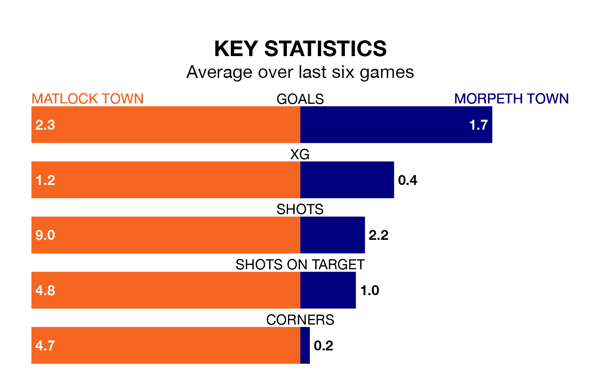

Matlock Town host Morpeth Town on Saturday at the DCJ Group Insurance Arena in Northern Premier League.
In their last league match, on December 16, Matlock lost to Bamber Bridge 2-1 away.
Morpeth drew, 2-2 at home against Basford United.
With 41 goals in 20 games so far this season, Matlock are scoring more than average in the league with 2.0 goals per game. But they are conceding more than average too, letting in 40 goals at a rate of 2.0 per game.
Morpeth are also above average scorers, with 2.0 goals per game, compared to a league average of 1.7. They have also conceded 2.0 goals per game.
Matlock Town are in reasonable form in Northern Premier League, with four wins and two losses from their last six games.
With two wins and two draws over that period, Morpeth Town's form is worse – they have taken eight points from 18, compared to the home team's 12.
Over the last two years, Matlock and Morpeth have played each other on four occasions. Morpeth won one of them and they drew the other.
On average, Matlock scored 1.2 goals and Morpeth 1.8 in those matches.
Their last meeting was on August 19, when they played out a 3-3 draw.
Matlock are 11th in the table after 20 games, of which they have won nine and drawn three, earning 30 points.
The visitors are one place behind Matlock in 12th, with eight wins and six draws putting them on the same number of points.
Updated: 15:16, 21/12/23